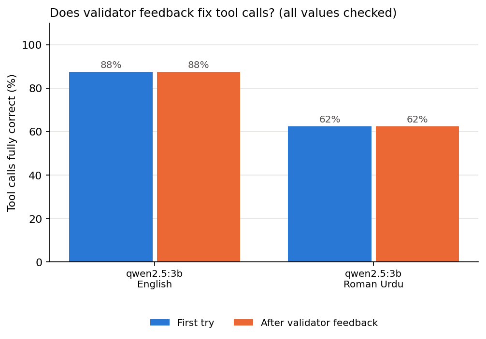

Experiment · Agentic AI · Roman Urdu
The validator said yes. The refund was still wrong.
A self-correction loop can only fix the errors it can see.
By Muzammal Hussain · 21 October 2026 · 4 min read
AI agents act through tool calls. When an agent books an appointment or issues a refund, the language model fills in a small structured form, usually JSON, such as {"invoice_id": "INV-1029", "amount": 45.5, "currency": "GBP"}. A common safety net is a validator: code that checks the form and sends it back to the model with a list of problems if a field is missing or has the wrong type, so the model can correct itself before anything happens. I wanted to know how much protection that net gives a small model running on a laptop, in English and in Roman Urdu, the way many people in Pakistan and the UK diaspora actually type.
Key findings
- All 16 tool calls passed the validator on the first try, so the self-correction loop never ran.
- Four of them were still wrong: 1 of 8 in English and 3 of 8 in Roman Urdu.
- In one Roman Urdu refund the model wrote 100, a number that appears nowhere in the request.
- Fractions were lost in both languages: "dhai baje" (2:30) became 2:00, and "forty-five pounds fifty" became 45.
- An empty city passed the validator, because an empty string is still a string.
What I did
I wrote 8 tool calls for a physiotherapy clinic system: book an appointment, record vitals, record a pain score, set a reminder, refund a payment, cancel an appointment, search patients and log an exercise. Each request was written once in English and once in Roman Urdu, 16 calls in total. Several used number words on purpose, such as "half past two" / "dopahar dhai baje" and "forty-five pounds fifty" / "paintalees pound pachaas pence". No real patient data was used.
The model was qwen2.5:3b, running locally through Ollama on a MacBook M4 with 16 GB of memory. Each call went through a validator that checked keys, types, date and time formats and allowed values. If it failed, the model got the list of problems and up to two more tries. The feedback never contained the correct answer. I scored every call twice:
- Schema valid: did it pass the validator? This is what a real system can check.
- Fully correct: was every value right? Only the person who wrote the test knows this.
Results

| Language | Passed the validator first time | Fully correct | Valid but wrong |
|---|---|---|---|
| English | 8 of 8 | 7 of 8 | 1 |
| Roman Urdu | 8 of 8 | 5 of 8 | 3 |
The four wrong calls
| Request | Should be | Model wrote |
|---|---|---|
| "dopahar dhai baje" (Roman Urdu) | 14:30 | 14:00 |
| "forty-five pounds fifty" (English) | 45.50 | 45 |
| "paintalees pound pachaas pence" (Roman Urdu) | 45.50 | 100 |
| "Glasgow mein" (Roman Urdu) | Glasgow | an empty city |
The refund of 100 worries me most. The model did not misread a number; it produced a new one, and the system had no way to notice. A wrong refund is a billing error. The same failure in a tool that records a medication dose could harm a patient.
Why the retry loop did not help
A schema validator checks the shape of an answer, not its meaning. It is like a receptionist who checks that every box on a form is filled in, but not whether the numbers are true. In this test every error was a meaning error, so the self-correction loop, often presented as the fix for unreliable agents, had nothing to do. Roman Urdu did worse, but the lost 50 pence in English shows that number words are a problem in both languages.
What I would build
For MeetPhysio, the clinical documentation system I am building, I take two lessons from this:
- A stricter schema where it can help: no empty strings, sensible ranges for numbers. That would have caught the missing city.
- A confirmation step for anything that changes money or treatment: read the call back in plain words, "Refund £45.50 for INV-1029, is that right?", before it runs. Only a check like this would have caught the invented 100.
Limitations
This is a pilot: one 3B model, 16 calls, one run at temperature 0. One task is 12.5 percentage points, so the gap between English and Roman Urdu is a signal to test, not a result. I wrote the tasks and the Roman Urdu wording myself, and other spellings could behave differently. Because no call failed the validator, this run says nothing about how well feedback fixes errors when it does run. I also cannot yet say why number words fail; my guess is that words like "dhai" and "paintalees" are rarer in training data than digits.
What I will test next
- The same requests with digits ("2:30", "45.50") and with words ("dhai", "paintalees"), to check whether the words cause the errors.
- A stricter schema and a read-back confirmation step, measured on the same tasks.
- 50 or more tasks, several Roman Urdu spellings, more runs and a larger local model.
Model: Qwen2.5 3B run locally with Ollama. The tasks, the validator, every model reply and the summary table are in the GitHub repository, and the whole experiment runs in about a minute on a laptop.